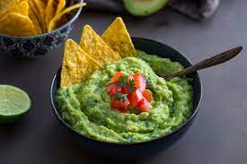

Guacamole

Description
Guacamole is a creamy and flavorful dip made primarily from mashed ripe avocados, mixed with lime juice, diced tomatoes, onions, cilantro, and seasonings like salt and pepper. It's easy to prepare by mashing together the ingredients until well combined. Guacamole can be enjoyed as a dip with tortilla chips or as a topping for tacos, burritos, salads, and more.
Ingredients
- 2 ripe avocados
- 1 lime
- 1/4 cup diced red onion
- 1 medium tomato, diced
- 1/4 cup chopped fresh cilantro
- 1/2 teaspoon salt, or to taste
- 1/4 teaspoon ground black pepper
- Optional: 1 small jalapeño, seeded and finely chopped (for extra heat)
Steps
- Cut the avocados in half lengthwise and remove the pits. Scoop the avocado flesh into a mixing bowl using a spoon.
- Using a fork or potato masher, mash the avocado until it reaches your desired consistency (smooth or slightly chunky).
- Cut the lime in half and squeeze the juice over the mashed avocado. Mix well to incorporate the lime juice, which helps prevent the avocado from browning.
- Add the diced red onion, diced tomato, chopped cilantro, salt, black pepper, and chopped jalapeño (if using) to the bowl with the mashed avocado.
- Gently fold all the ingredients together until well combined. Be careful not to overmix, as you want to maintain some texture in the guacamole.
- Taste the guacamole and adjust the seasoning if needed. You can add more salt, pepper, or lime juice according to your preference.
- Transfer the guacamole to a serving bowl. You can garnish with additional chopped cilantro or a slice of lime if desired.
- Serve with tortilla chips, sliced vegetables, or as a topping for tacos, burritos, salads, and more.